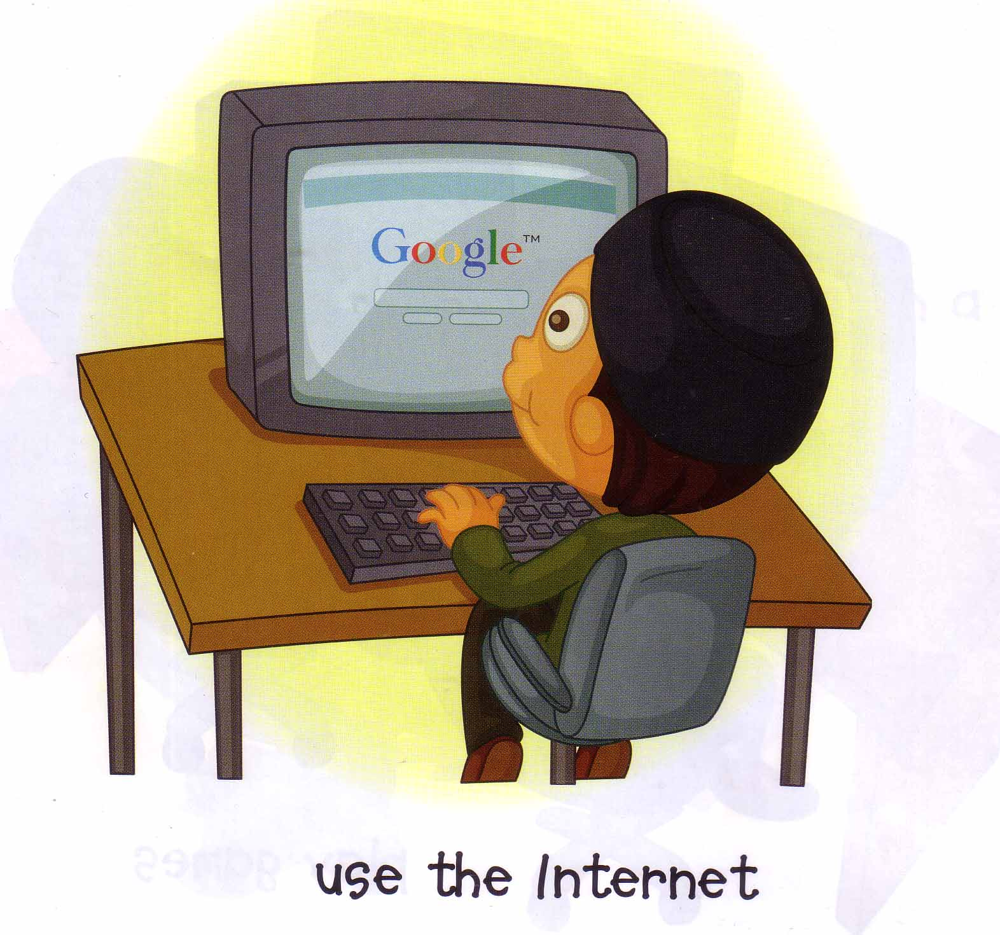
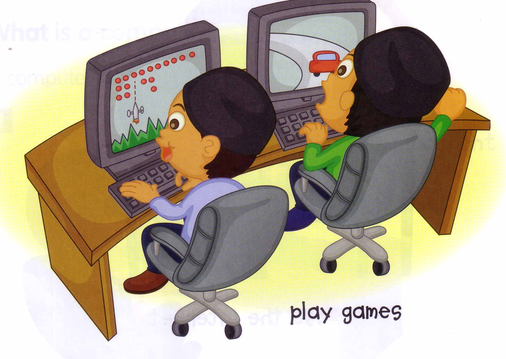
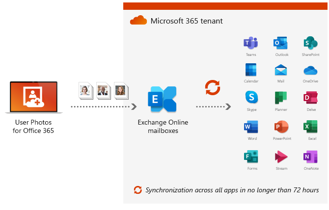
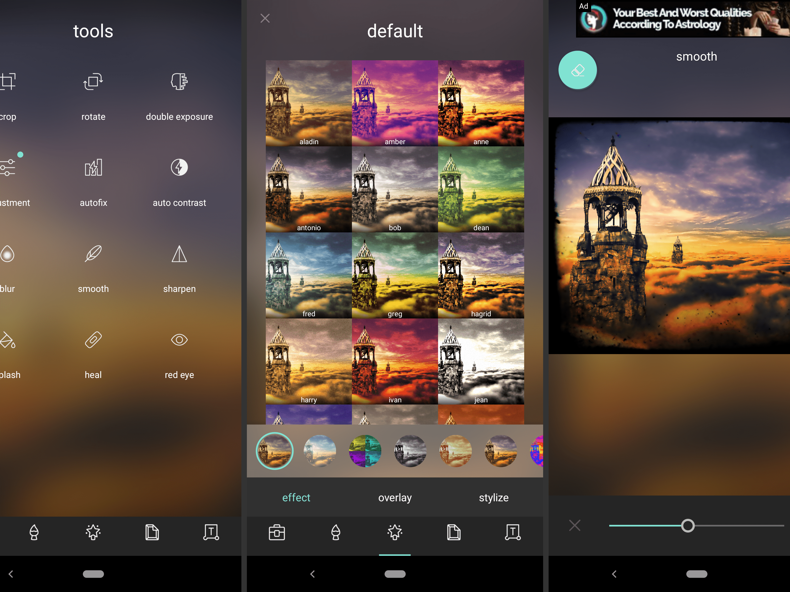

Learning computer is not a difficult process. However, it might become quite a burden when we see all the possible branches of learning computer. Simply, we can classify according to the type of users. They include:
A computer owner or a laptop owner has no knowledge of computer's internal or external usage. He might be able to open and close computers, plug in and out, type, open or eject media, browse for a little bit, and nothing more. Normally, people who have never been in touch with devices or have no interest on media, are the level 0 users. They may not be able to modify or create advanced files.
(1) Ordinary basic user
An ordinary basic user usually uses his computer quite frequently. He might use for repeated but non-developmental tasks such as watching films or photos, browsing online for the required refrence and so on. Many senior office employees are usually responsible for this level of user. The user may be able to advance his skills by further reading and life-long experience.


(2) Standard Office User
A standard office user is more than an ordinary office clerk. He might be able to share tasks among colleagues, complete the projects on time and need to be skilled at all Office apps i.e documentation, slide creation, spreadsheet graphical database and so on. Many senior office employees are usually responsible for this level of user. The user may be able to advance his skills by further reading and life-long experience.

(3) Occupational editing user/ Media-related
This type of user needs a more specific type of software than the others. he would need a set of adobe or gnome editory apps. He would need to use a large number of controls and methods to create an artwork fine and perfect. The skills of such a user increases according to the uprising types of software he uses. This user type is vital for the section of media. He would be a required professional in many fields of jobs.

(4) Developer
All users may have types of slightly different terms in their subjects, whereas developers are the type of users who have the largr variety of branches. The top branches distinguished for developers are:
→ System programmers have to code an endless enormously large operating system as well as some built-in programs. Windows, Mackintosh, UNIX and Linux are the most widely used systems. System programmers need to be very secretive and secured in order to prevent information leak.
→ Application developers have to make a large plan for which to display, what to run, what to save and so on. They have to determine on which type of device the app will be used, i.e Android Phones, iOS i-phones, or in desktops. Application developers can even set up a company on their own and become an entrepreneur.
→ Website Authors have to create a static, dynamic webpage or a web-app. Such authors have to learn sufficient skills in coding frontend, backend and databases. They need to co-operate and have teamwork. Website authors get a very high salary in many companies for creating an official website for them.
(5) Networking Specialist
Networking specialists are in a completely different level of users among the computer users. They do need computers and programs for setting up a local area network, but they need to depend on hardware more. Routers, satellites, switches, hubs and network cables are usually the components most networking specialists require. Nowadays, network engineers, who have the highest yearly salary among all other occupations are very precious and vital for network ability of the local area.
(6) Hacker
Hackers, generally classified into white-hat, black-hat and grey; are one of the getawaya from the security check and programming. Many extensions, exploits and tools are generated by black hats and peeking out information. White hats try to prevent being hacked, so thereby improving the security level of such an environment. Greys are the non-professional people with few hacking skills and used to trick buddies only.